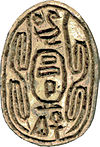
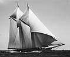

From today's featured article

Shesi was a ruler of parts of Ancient Egypt sometime between 1800 and 1550 BC,near the end of the Middle Kingdom a or during the Second Intermediate Period.
Based on the archaeological evidence, he is the best attested king in this timeframe; hundreds of scaraboid seals bearing his name have been found as far away as
Carthage and throughout Canaan, Egypt, and Nubia. Nevertheless, historians cannot pin down basic facts about this ruler, such as his dynasty or the duration and extent of his reign. Three competing hypotheses have been put forth: he may have
been Salitis, founder of the 15th Dynasty and king of the invading Hyksos, or a later Hyksos king or vassal of the second half of the 15th Dynasty, or a ruler of the 14th Dynasty, a line of kings of Canaanite descent ruling over the Eastern Nile Delta immediately before the arrival of the Hyksos. (Full article...)
Did you know...

- ... that Kaiser Wilhelm II was so charmed with the American yacht Yampa (pictured) that he purchased her himself and had another larger yacht built in America based on her design?
- ... that the lyric soprano Anny Felbermayer, who performed 54 roles at the Vienna State Opera, created the role of Xanthe in Die Liebe der Danae by Richard Strauss at the 1952 Salzburg Festival?
- ... that hundreds of Jewish communities used to celebrate more than one Purim a year?
- ... that the 2011 Löfstedt Report proposed to exempt many British self-employed people from health and safety regulations?
- ... that Polish mountain climber Tomasz Mackiewicz went missing on January 27 during his seventh attempt to reach the summit of the 8,126-metre (26,660 ft) high Nanga Parbat in Pakistan?
- ... that people have underestimated the role of faith in Buddhism, according to translator and monastic Bhikkhu Bodhi?
- ... that the Oriental Basin pocket gopher was designated a species in 1895, demoted to a subspecies of Merriam's pocket gopher in 1968, then restored to species status in 2005?
- ... that Michael F. Adubato tried to block a bill giving Newark, New Jersey, $18 million in added tax revenue, to protest salary increases for Newark's city council totalling $150,000?
In the news
- At least 31 people are killed and about 300 others are injured by an earthquake in Papua New Guinea.
- American evangelical preacher Billy Graham (pictured) dies at the age of 99.
- Three Billboards Outside Ebbing, Missouri wins five awards, including Best Film, at the British Academy Film Awards.
- Iran Aseman Airlines Flight 3704 crashes in the Zagros Mountains, killing all 65 people on board.
- South African president Jacob Zuma resigns amid corruption claims, and is succeeded by Cyril Ramaphosa.
On this day...
March 1: Purim (Judaism, 2018); Independence Day in Bosnia and Herzegovina (1992); National Pig Dayin the United States; Saint David's Day in Wales; Yap Day in Yap
- 1476 – War of the Castilian Succession: Although the Battle of Toro was militarily inconclusive, it assured Ferdinand and Isabella the throne of Castile, forming the basis for modern Spain.
- 1872 – Yellowstone National Park (bison pictured), the first national park in the world, was established with the majority of it in the U.S. state of Wyoming.
- 1921 – The Australian cricket team led by Warwick Armstrong became the first team to complete a whitewash in the Ashes, something that would not be repeated for 86 years.
- 1958 – Archbishop of Chicago Samuel Stritch was appointed Pro-Prefect of the Sacred Congregation for the Propagation of Faith, thus becoming the first American to head a dicastery of the Roman Curia.
- 2014 – A group of knife-wielding men and women attacked passengers at Kunming railway station in Kunming, China, leaving 31 victims and 4 perpetrators dead with more than 140 others injured.
Vladislaus II of Hungary (b.1456) ·
Francesco Redi (d. 1697) ·
Nick Griffin (b. 1959)
More anniversaries:
February 28 ·
March 1 ·
March 2
Archive · By email · List of historical anniversaries